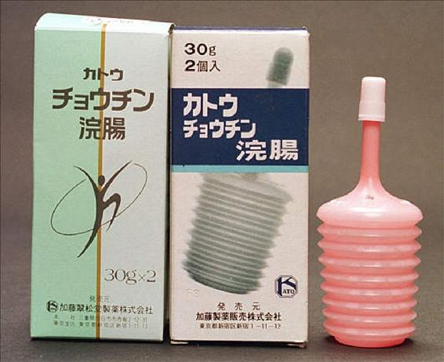
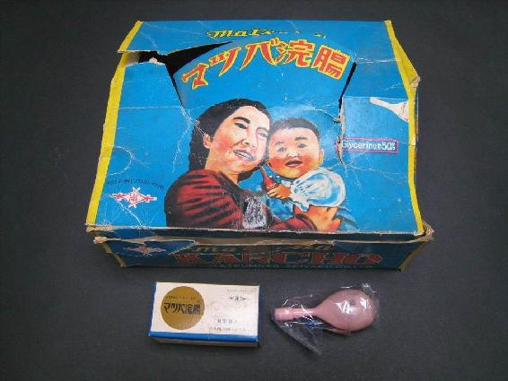
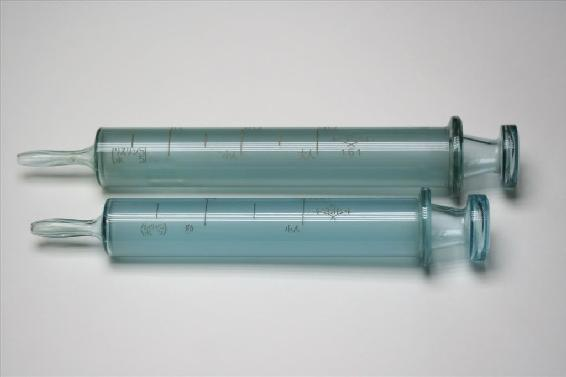
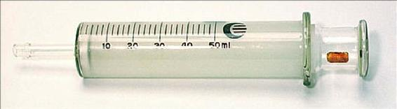
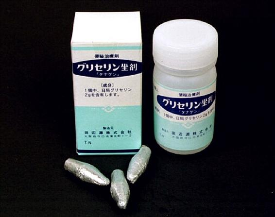
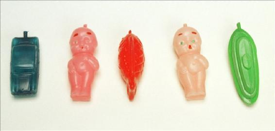
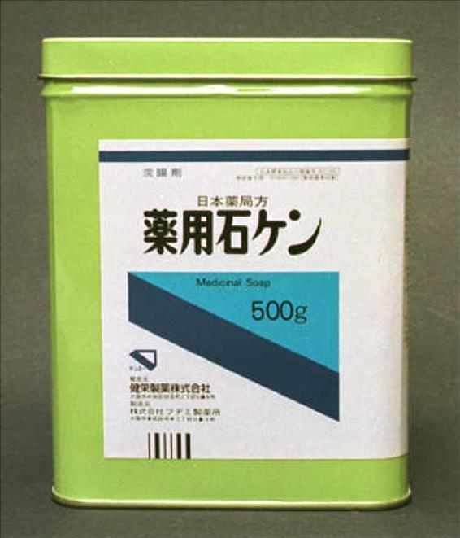

🏠
日
月
縦書き／横書き


| 浣腸図鑑 (ｅマニア文庫) | |
| MALCA | |
| e maniac books (2013) | |
紹介点数110点！カラー画像130点！その内容すべて「浣腸」と「浣腸関連」の物品だけで構成された「浣腸図鑑」でございます！おそらくここまで浣腸そして浣腸関連物品だけを扱った図鑑は世界に類例がないかと思われます監修／執筆は浣腸情報＆交流サイトの老舗「東京浣腸博物館」（現在休止中）の管理人であり浣腸学芸員でもある「MALCA（マルカ）」氏おそらく浣腸マニアの方なら、氏の名前をどこかで見かけたたことがあるはずです紹介する浣腸等に対する氏ならではの思い出やこだわり、そして実用の際の注意点など、正確な化学知識と豊富な実践経験を持つMALCA氏ならではの「浣腸うんちく」がたっぷりと詰まった一冊となっております
目次
［国産浣腸編］
［外国産浣腸編］
［浣腸器編］
［坐薬／座薬編］
［浣腸関連物品ほか編］
国産浣腸編 イチジク浣腸 旧式／戦前～戦中
古いイチジク浣腸のサンプルです。セルロイド製の容器で、用量は10gで小児用です。製造はイチジク製薬になっていて、所在地は本所区平川橋となっています。
イチジク製薬の社史によると、東京軽便浣腸製造所からイチジク製薬に社名を変更したのが昭和９年。本所区平川橋の本社工場が東京大空襲で焼失したのが昭和20年となっています。従ってこのサンプルが製造されたのは昭和９年から昭和20年の間ということになります。
外箱に「日本グリセリン軽便浣腸薬製造同業會」の証紙が張ってあります。イチジク印軽便浣腸が発売されて類似品が多く販売されましたが、グリセリンは高価で値段の安い食塩（塩化ナトリウム）等を使った浣腸も多かったようです。
「日本グリセリン軽便浣腸薬製造同業會」の実体は筆者には判りませんが、浣腸の成分としては高価なグリセリンだけを使った浣腸のメーカーの団体だったのではないかと思います。
サンプルはボール紙製の箱に十個入りで、箱の中に間仕切りが有るだけで、穴明け用の針等は付いていません。
イチジク浣腸 旧式／戦後
イチジク製薬の製品で登録商標ですが、「家庭用の浣腸」の固有名詞と思う人がいるくらい有名。
大正末期に東京の内科医が考案しました。夜間に子供の急患で往診に行き、大抵の場合、浣腸で良くなることが多く、家庭で簡単に浣腸ができるようにと考案されたといいます。
最初はセルロイド容器で先端の横のくぼみを付属の金具で突き破り、穴を開けて使用しました。この形態の容器は昭和40年代にキャップ式になるまで使われていました。
セルロイド容器には微小な隙間があり、保存中に水だけが蒸発するのを防ぐため、容器をワックスやビニールでコーティングしていました。昭和20年代の終り頃にポリエチレンが使われるようになるまで、そのような手間をかけていたようです。写真はポリエチレン容器になってからのものです。イチジク製薬の旧社名は東京軽便浣腸社といい、その頃よりイチジクのマークと名前が使われていました。
イチジク浣腸 旧パッケージ
イチジク浣腸の旧パッケージです。
今のブルー地に白い十字状の箱に変わる約20年くらい前まで使われていて、記憶ではキャップつき容器に変わった頃にこの箱になったように思います。
浣腸のサイズにより箱の色が違っていて、10gは左上部が緑、20gは茶色、30gは青になっていました。
このデザインの箱も２種類あり、新しいものは裏側にどの会社の浣腸にも書かれているのと同じ「使用上の注意」が書かれています。古い箱だと裏側に詳しい使用方法が書かれていました。
写真では10gが古く、20gが新しい箱です。
この頃のイチジク浣腸は容器が厚くて潰し難く、使いづらかった記憶があります。そしてキャップが緩く、箱を開けると中で液漏れしていることも時々ありました。
古いほうの箱には、
１／浣腸器の首部を持ちキャップをまわすようにしながら取り外し、そのまま使用します。胴部を押さえてキャップをはずすと薬液が飛び出すことがありますから注意してください。
２／少量の薬液を出して尖端部をぬらし、なるべく奥まで挿入してください。
３／次に浣腸器を押しつぶし注入します。この際、終わりに二つ折りしますと液が無駄なく注入されます。
４／注入がすみましたら浣腸器を抜き、肛門を脱脂綿か柔らかい紙で押さえてください。やがてはげしい便意を催しますが、この時すぐ排便せずできる限りがまんしてから排便してください。
など、詳しい使用方法が書かれていました。４の「やがてはげしい便意を催しますが、この時すぐ排便せずできる限り我慢してから排便してください」など、読むと胸がドキドキした記憶があります。
この頃の効能は広く、便秘及び便秘を原因とする発熱、ヒキツケ、頭痛、メマイ、ガス膨満、痔疾となっています。
イチジク浣腸 旧パッケージ（戦後）
古いタイプのイチジク浣腸の空き箱です。
会社所在地の表示が現在の区でなく旧漢字を使っていますが、墨田区駒形になっていること、書き方が左から右になっていることから戦後の物と思われます。
空き箱の中には、浣腸を包んでいた包装紙が残っていました。
イチジク印軽便浣腸と表記してあることから、通称で言われていたイチジク浣腸が商品名になったのは、製造開始からかなり後だったようです。
私の子供の頃はポリエチレン容器で、浣腸を包装している袋もポリエチレンでしたが、この様な形の箱に入れて売られていました。箱ごとでなくバラ売りもしていて、一個でも買うことができました。
イチジク浣腸（新型）
新しいタイプのイチジク浣腸です。
元々イチジク浣腸の容器は厚みが多く、硬くて使いづらい容器でした。最近の物は以前に比べると柔らかくはなっていましたが、類似品と比べると硬い容器でした。
今回の製品はずいぶんソフトな容器になっていて、色もずいぶん薄くなっています。
新型の特徴は携帯袋が付いていて、使用後の容器の廃棄や、トイレの携帯時にも抵抗感が無く取り出せるということです。
この携帯袋ですが、写真の物は紐の色がブルーですが、全部で六色あります。今回より新しいキャラクターとして九官鳥の「するりん」が箱や携帯袋に印刷されています。
新型イチジクは、一箱に一個入りの割にはずいぶん割高感があるように思います。携帯袋も「するりん」が印刷されているため、見る人が見れば一目でわかり、少々アイデア倒れの気がします。
イチジク浣腸「楽おし」
イチジク製薬の新製品の浣腸です。
使い捨ての浣腸の問題点は、浣腸液の容器内の残留液や逆流です。
この新製品では、容器の片側の側面の大きさが小さくなっていて、溝が出来ています。容器を押しつぶすと溝の部分が内側に凹み、元に戻りません。
材質はかなり固く、潰しにくいのですが、元に戻らないため逆流防止になっています。押しつぶした後に容器を二つに折りたたむと、残留液が殆ど残りません。
容器は薄いブルーのポリエチレンです。ブルーの容器の浣腸は、製造中止になったツルミ浣腸くらいではないかと思います。
同じ様な浣腸で、コトブキ製薬の『ひとおし』がありますが、こちらは肛門に挿入したまま不用意に指の力を抜くと浣腸液が逆流します。
成分は普通の50％グリセリン液です。
この「楽おし」はかなりよく考えられた容器と思いますが、価格的には割高です。
イチジク浣腸Ｅ
イチジク浣腸の新タイプです。30gと40gの二種類があります。
従来のタイプに比べて、ノズルが若干長くなっており、その根本が蛇腹になっています。そのため、形がカブトガニのような感じになっています。成分自体は変わりません。
形状変更したため、薬液がより奥に届き、ノズルが動くのが特徴とのことです。
しかし、実際に使ってみると、ノズルの根本の一部が蛇腹になっているだけでほとんど動かず、実際にはあまり意味がないように思われます。また、容器の一部を蛇腹にしたことで、かえって注入しにくくなった感じです。
新型の発売にともない、旧タイプの40gは製造中止になり、値段も旧型に比べ高くなりました。
イチジク印軽便浣腸リスクワン
別項の「イチジク浣腸（旧式）」にて、大正末期に田村廿三郎医師がセルロイド容器入りの浣腸を考案したことに触れましたが、この箱は、その当時のものです。社名も「東京軽便浣腸製造所」で、大正15年に設立されています。
この時の商品名は「イチジク印軽便浣腸リスクワン」だったようです。
昔はグリセリンのことを「リスリン」と呼んでいて、リスリン浣腸の意味でリスカン（旧仮名遣いでリスクワン）にしたのだと思います。
子供の頃、親戚の家で東京軽便浣腸社の空箱を見たことがあるのですが、商品名はイチジク浣腸になっていました。イチジク浣腸の方が馴染みやすいので、商品名になったのではないかと思います。
昭和９年に、東京軽便浣腸製造所からイチジク製薬に社名変更しています。
大塚浣腸Ｌ
大塚製薬がかつて販売していた浣腸です。現在は売られていませんが、成分はグリセリンの普通の浣腸です。
この浣腸の特徴は容器が変わっていることです。容器の形が駄菓子屋で売っていた飲料水を小さくした形をしています。
ツイストオフ容器と書かれているように、先端の突起をねじ切ると穴が開きます。容器は柔らかく、思ったより使いやすいです。写真からもわかるように容器の底の部分が他の容器と連結していて、使用時に切り離して使います。この手のつくりの浣腸は同じ大塚製薬のオロナイン浣腸くらいだと思います。
写真ではツイストオフ容器ですが、後にキャップ式に変更されています。
二枚目の写真が、キャップ式のものとなります。容器は密閉構造となっていて、挿入部の先端には窪みがあり、キャップの裏側に針状の突起があります。使用する際にキャップを容器に強く押し込んで、容器に穴を開けて使用します。
成分は普通のグリセリンです。薬局には小箱10個入りの大箱で納入されていたようで、大箱のふたに「\400」と小売価格と思われる金額が手書きされています。
オリール浣腸
最近、通販で見つけた浣腸です。
製造販売が池尻製薬の浣腸で、30gと40gの二種類がありました。
形状は一般的なイチジク型で、肉厚の薄い透明なピンクの容器入り、トレードマークなのか竪琴が浮き彫りになっています。
イチジク型の浣腸としては、挿入部が長めです。柔らかくて絞りやすい容器で、とても使いやすいと思います。
成分は局方の濃グリセリン43％ということなので、薄いように思えますが、通常の浣腸はグリセリン50％の場合が多く、成分としては他の浣腸と同じです。当然のことですが、効果も普通の浣腸と同じです。
名前のオリール浣腸ですが、「（便が）降りる」のもじりでしょうか。そうだとしたら、少々安直な気がしないでもありません。
オリエンタル浣腸液
製造がオリエンタル薬品工業、販売が日医工の医療用グリセリン浣腸です。オリエンタル浣腸液は旧タイプと新タイプがあり、これは新タイプです。
旧タイプのオリエンタル浣腸は、容器とチューブが一体になっていて、容器は長細く浣腸液は容器のお尻の部分から充填されていました。新タイプは丸みのある容器で、浣腸液はノズル側から充填されています。
大きな違いは、容器が完全密封になっていて、チューブをねじ込む事により、ノズルの付け根に有る突起が容器を突き破り容器に穴が開きます。
同様の構造の浣腸は、テイコクメディックスのグリセリン浣腸オヲタと報国製薬のダムトール浣腸が有ります。
グリセリン浣腸オヲタはチューブの取り外しはできず、ダムトール浣腸はノズルと容器が別々で使用時に取り付けていました。
オリエンタル浣腸液は容器にノズルが付いたままで出荷されますが、ねじ込み式で、写真のように簡単に取り外せます。
成分は１ml中グリセリン0.55gで、添加物としてパラオキシ安息香酸ブチルが加えられています。
キンセン浣腸
日本アイデアル浣腸製剤所の製造していた浣腸で、非常によいものです。容器はセルロイド製で、一体成型ではなく表と裏から張り合わせたようです。セルロイド容器のため水分が蒸発し、３分の１くらい液体が残っています。
成分は不明ですが、主剤リスリンと書いてあるので、グリセリンは使われているようです。容器の中に結晶ができているので、他に塩化ナトリウム等も使用されていると思われます。
先端の横に穴を開けるための窪みがあり、添付の針で穴を開けます（内蓋に「穴ヲアケル竹針ガ添ヘテアリマス」と書かれています）。
箱の説明も旧仮名遣いで、竹針を使用していることから太平洋戦争中～戦後間もない頃のものではないかと思います。
グリセリン浣腸｢オヲタ｣
浣腸マニアの間では一番人気のある、医療用の浣腸です。
形は流線型のスマートなデザインになっています。チューブには10cmまで１cmごとに目盛りがあり、キャップを抜くと潤滑のためのゼリーが塗られています。チューブの根本には逆流防止用のステンレスポールが入っています。
この浣腸の特徴は完全密閉容器で、写暮では見えにくいと思いますが、容器の先端に扁平な突起があります。チューブの根本の内側にツバがあり、チューブを回すとツバが突起を引っかけ、容器に穴を開けるようになっています。添付文書にも、密閉容器のため添加物が無いと書かれています。
逆流防止のステンレスポールが流量の制限をしているようで、容器を強く握っても急激に注入されません。
コトブキ浣腸（旧型）
セルロイド容器時代のコトブキ浣腸です。
容器はセルロイド製で硬く、挿入部の先端の側面に穴を開ける窪みがあり、先端には潤滑剤らしき物が塗られていたようですが、酸化してすっかり硬くなっています。
胴体には紙のラベルが貼られていて、胴体には文字等はありません。
ムネ製薬の会社概要によると、ムネ製薬の設立が昭和22年になっていることから、浣腸の容器がセルロイド製からポリエチレン製に変わる昭和20年代に製造された物と思われます。
容器の表面には浣腸液の蒸発防止にワックスが塗られていたのですが、すでにかなり剥がれている感じがします。容器の状態はあまり良くなく、穴が開いている様子はありませんが、容器の表面に浣腸液が滲み出ている感じで、ティッシュで包んでおくと、ティッシュが湿ってしまいます。浣腸液も、すでに半分くらいしか残っていません。
コトブキ浣腸「ひとおし」
コトブキ浣腸の新型です。
胴体の部分が横向きの蛇腹状になっているのが一番の特徴で、容器を立てたまま置くことができ、指で一押しするだけで浣腸液が注入できます。
ずいぶん以前ですが、子供向けの医薬品の「奇応丸」を製造している樋屋製薬が販売していた「ヒヤ浣腸」が、これに似た形状をしていました。「ひとおし」と違って丸みのある形状でしたが、同じように蛇腹の部分を押しつぶすことで一気に浣腸液を注入することができました。
某テレビ局の朝の番組に製造元のムネ製薬の社長が出演して、外国旅行をしたときにアコーディオンの蛇腹を見て思いついたと言っていました。同じようなことを考える人は一人では無いと思います。
「ひとおし」ですが、胴体の側面が柔らかすぎて、押すと胴体が凹んで浣腸液が多めに残ってしまう気がします。胴体の側面はもっと硬くした方が、ずっと使いやすかったかもしれません。
自立する浣腸 ウサギ浣腸／ハート浣腸UFO容器／ビワ浣腸／アデン／カトウチョウチン浣腸
一般用の浣腸はイチジク型の容器が多いようですが、変わった形の浣腸もあります。ここでは、自立できる形状の浣腸を取り上げてみます。
左側がウサギ浣腸（エスエス製薬）で、底がガラス瓶の底のように内側にへこんでいます。容器の中心に横に折り目があり、使用の際に容器の底を押すと、容器の下側が折り目を境にして上側にめり込む形で潰れます。めり込んだ容器は元には戻らず、浣腸液の逆流を防止します。容器は硬めで、挿入時に潰れることはありません。残念ながら製造中止で、現在はコトブキ浣腸のムネ製薬で製造したものが売られています。
ハート浣腸UFO容器（ハート十字製薬）も基本的には同じ構造で、容器の底を押すと折り目の部分より上側にめり込みます。容器はウサギ浣腸より柔らかめで挿入時に潰れやすいのですが、使いよくできています。
ビワ浣腸は現在はNEWビワ浣腸（レーベン製薬）と名前が変わっています。今なお健在です。
アデン（ハート十字製薬）とカトウチョウチン浣腸（ムネ製薬↓加藤翠松堂製薬）は容器がジャバラ状になっていて、浣腸液の注入が簡単にできるようになっています。しかし実際に使用すると、挿入時に容器を持つと浣腸液が漏れ、挿入部が短いためにチューブも持てず、使用しにくいと思います。
また、外観は似ていますが構造はかなり異なっています。チョウチン浣腸が一体成型の容器なのに、アデンは容器と挿入部が分解できます。さらに、挿入部の根元に逆流防止用のゴムのスリットがあり、注入時に浣腸液が逆流しにくくなっています。
チョウチン浣腸は逆流防止構造が無く、容器の復元力が強いので、注入後に手を離すと浣腸液が容器に逆流してしまいます。

スースカット浣腸
コトブキ浣腸を製造、販売しているムネ製薬の浣腸です。大手のドラッグストアで比較的最近見かけるようになりました。
ピンク色のパッケージの他に、白地に緑と青のデザインのパッケージもあるようです。ですが、後者の製品は私はまだ見たことがありません。販売先によりパッケージが異なっているのかもしれません。
容器は無色透明で、形はコトブキ浣腸と同じです。
名前はスーッとして、スカッとするという意味なのかどうかは分かりませんが、どのような理由でこんなネーミングにしたのか興味はあります。
ダルムトール浣腸
一般用の「ミカサ浣腸」を製造している報国製薬の医療用浣腸です。
この浣腸の特徴は、浣腸液の入った容器とレクタルチューブが別々になっていることです。このような形態の浣腸は医療用でもこの浣腸だけです。
丸みのある容器の先端には、アルミのラミネート膜があり、レクタルチューブが容器に固定される時に穴が開き、使用できるようになります。レクタルチューブには１cmごとに目盛りがあり、６cmからは2.5mmごとに目盛りが細くなります。逆流防止弁のようなものはないようです。
このような形態の浣腸が少ないのは、忙しい医療の現場では容器とレクタルチューブが別になっていると使い難いからではないか、と考えられます。
長生浣腸
製造元ムネ製薬、発売元長生堂製薬の浣腸です。この浣腸が製造中止になると聞いたため、大箱で購入しました。購入した薬局の話では在庫限りとのことでした。
容器はムネ製薬のコトブキ浣腸と同じです。この浣腸は商品名が漢字とアルファベットで書かれていますが、カタカナで「チョウセイ浣腸」と書かれている商品もあります。これは製造元はムネ製薬ですが、発売元がG&G社となっていて、ドラッグストアのチェーン店で今も販売されています。
ハート十字浣腸
私が小学校四年生の頃より使用していた浣腸で、製造打ち切りに至るまで同じデザインの箱に入って売られていました。
100g中の成分は塩化ナトリウム15g、グリセリン５g、タウリン２g......タウリンはアミノ酸の一種で、栄養ドリンクでよく見かける成分ですが、なぜ浣腸に含まれているのかは分かりません。製造時期により、微妙に成分は変わったようですが。
効果の方はグリセリン浣腸と異なり、注入してしばらくすると肛門部が熱くなる感じで、排便してもいつまでも残便感が残りました。最初はそれが嫌だったのですが、慣れると結構いい気持ちになります。
昔の浣腸器は挿入部の先端の突起をねじ切ると穴が開く仕組みでしたが、後にキャップ式になりました。旧容器は挿入部が先端に行くほど太くなっていましたが、今のはストレートです。
30gの新容器の縁には折り目があり、注入時にこの部分で折り畳まれ、注入しやすくなっています。
ハート十字浣腸は製造中止になりましたが、グリセリンを使ったハートカンチョウと、塩化ナトリウムの濃度を薄くしたハート浣腸が同じ容器で現存します。
子供の頃にこの浣腸を舐めたことがあり、確かに塩味がしました。同級生にも浣腸を舐めたという子がいて、彼はグリセリン系の浣腸を舐めたらしく、甘い味がしたと言い張るので、ケンカになったという思い出があります。
仲裁に入った先生にケンカの理由を聞かれましたが、まさか浣腸の味が原因とは言えずに、困ってしまいました。
ハート十字浣腸 浣腸液
私が子供のころ、調合済みの浣腸液が配られたことがあるのですが、これがその浣腸液です。当時は褐色のガラスビン入りで、小学校の保健室にも置いてありました。
すでに入手不可能と思っていたところ、まだ売っていました。
ハート十字浣腸製造で、塩化ナトリウム15％、添加物チモールとなっています。ハート十字浣腸Ｌとほぼ同じですが、グリセリンが配合されていません。しかし効果はあまり変わらず、注入すると肛門の辺りが熱いというか、痛いような感覚になります。
以前はビン入りだけでしたが、今は使い捨て容器入りもあります。この容器も変わった形をしていますが、意外に使いやすい容器です。挿入部はかなり長めで、蓋は柔らかくでさています。
塩化ナトリウムが成分の浣腸は、現在ではこの浣腸液と、塩化ナトリウムの濃度が約３分の２のハート浣腸Ｌのみになっています。
ハート十字浣腸 旧箱
ハート十字浣腸の外箱です。
実際は20mlの２個入りの小箱が10個ほど入っていました。
医学博士、谷向茂峻先生創薬、発売元、タデヌマ製作所となっていますが、これは相当古い物です。
横書きになっている部分が右から左に印刷されていて、文字も旧漢字が使われています。
昭和16年頃のハート十字浣腸の新聞広告では製造元が太洋製薬となっているので、それ以前の製品と思われます。
トレードマークのハートはほとんど同じですが、ハートの内側の十字が異なっています。
成分などは全く不明ですが、ずっと後までハート十字は塩化ナトリウムが主成分ということを考えると、これも同様に塩化ナトリウムが主成分ではなかったかと思います。
ハート十字浣腸Ｃ
ハート十字製薬の浣腸で古い物です。
容器はピンク色のポリエチレン製、付属の針で先端横の窪みに穴を開ける構造になっています。昔のイチジク浣腸と同じ構造で、容器の部分はかなり柔らかくできています。
１個ずつ硫酸紙で包装されれていて、先端に穴を開ける鉄針が一緒に入っています。
成分は塩化ナトリウムにポリエチレングリコール、稠厚牛胆、チモール、ニトロフラゾントなっています。
塩化ナトリウムは主成分で、ポリエチレングリコール、稠厚牛胆は粘度をつけるため、チモールとニトロフラゾンは保存剤として使われていると思われます。
ハートのトレードマークは新しくなり、十字の部分とクロスしている部分の色が反転していて、それ以降も使われました。
私が子供の頃よく使ったハート十字浣腸Ｌは、会社の所在地はすでに大阪府豊中市になっていましたが、この浣腸の箱に書かれている所在地は大阪市東淀川区になっていて、書体も古く昭和二十年代の浣腸ではないかと思います。
フィットアポ浣腸
この浣腸は、大手のドラッグストアで販売されています。
発売元は本草製薬ですが、外国で製造されたものを輸入しているようです。しかし生産国は不明です。
おそらく日本の製薬会社の扱っている製品で、外国製の浣腸はこれだけではないかと思います。
成分はグリセリン50％とごく普通で、内容量は30gです。容器は、色、形ともに、イチジク浣腸そっくりです。
容器は固くて注入しにくく、キャップ式初期のイチジク浣腸によく似ていて、使い勝手はあまりよろしくありません。なお外国製といっても、値段が安いわけでもありません。
マツバ浣腸１
松本隆盛堂が製造販売元の浣腸です。
容器はポリエチレンになっていますが、古いイチジク浣腸と同じで、ノズル先端の側面に有る凹みを突き破って穴を開けます。写真では写っていませんが、浣腸を包装している袋の内部に穴明け用の鉄針が同梱してあります。
成分はグリセリン五〇％になっています。
使用方法の説明に「注入後五分くらいして薬の充分廻りたる後排便すれば......」などの記述や、10gが「一〇瓦」という書き方になっている事から、昭和20年代終わり頃の製品ではないかと思います。
写真の上側のボロボロの箱は薬局に納入する大箱で、この中に２個入りの箱が詰められています。
大箱には浣腸を手にした子供を抱いた母親が描かれていますが、今となっては少し気味悪く見えるタッチの絵です。
マツバ浣腸２
松本隆盛堂が製造していた浣腸です。別項で紹介した「マツバ浣腸１」は容器に金具で孔を開けるタイプでしたが、これはキャップ式になっています。２個入りの小箱は、キャップ式の方が一回り小さくなっています。
成分はグリセリン50％で、ごく普通です。容器はピンク色の不透明なポリエチレン製で、かなり厚めにできています。
このサンプルは小児用ですが、容器の大きさの割に挿入部が太いように思います。孔開け式の方が挿入部が細く、胴体も平たくなっています。
キャップ式の浣腸によく見られるように、液漏れ しているサンプルもあります。
孔開け式の浣腸と同じで、大箱の蓋には母親と、浣腸を握りしめた子どものイラストが描かれていますが、「１」よりも今回紹介している「２」のイラストの方がより不気味な感じになっています。

マツバ浣腸３
製造が松本製薬工業となっています。所在地などは松本隆盛堂と同じなので、社名が変わっただけのようです。
この浣腸は現在も製造販売されています。成分は濃グリセリン50％となっていて、局方グリセリン50％の浣腸が多い中で珍しい製品です。
添加物としてプロピレングリコール、プチルパラペン含有と記載されています。
プロピレングリコールは界面活性剤として、プチルパラペンは防腐剤として添加されているのではないかと思います。
容器は不透明、ピンク色のポリエチレンで、形は涙型で丸みのある胴体。内部の空気が多いため、つくりは大きめです。挿入部が下向きになるようにして浣腸液を注入すると、容器内の残留液が少なくできます。
ミニカ／ミニカＳ
佐藤製薬が製造している浣腸で、これもユニークな製品です。
一番多く含まれているのが70％ソルビトール液で、他にグリセリンとクエン酸ナトリウムが含まれてます。クエン酸ナトリウムが硬くなった便を軟らかくして排便を促し、グリセリンの浣腸のように、注入後紙などで押さえてがまんする必要がないと書かれています。注入後、５～30分で便意を催すとのことですが、浣腸慣れしてないと５分が限度かと思われます。
容器は変わっていて、挿入部の管の部分が長く歯磨きのチューブのような形です。その長さのおかげで注入時に手を汚すことがありません。容量は八mlと小量ですが、効能はかなり強く同時に２、３個入れると普通のグリセリンよりも激しい痛みがあります。スウェーデンのファルマシアと連携して作られたようです。
リスリン軽便浣腸
アイデアル浣腸製剤所が製造していた浣腸です。
大箱にはリスリン軽便浣腸と書かれていますが、小箱の方にはキンセン浣腸となっています。
このキンセン浣腸のサンプルは別項でも紹介していますが、製造者名が「外村万次郎」と記載されていました。
ですがこちらのサンプルはアイデアル製薬所「外村万次郎」となっています。
容器はセルロイド製で、孔を開けるための竹製の針が入っています。先端にはカカオバターが塗布されているようですが、すっかり固まっていて、薬液もほとんど蒸発しており、ほとんど残っていません。
リスリンはグリセリンの昔の呼び方で、商品名にも○○リスリン浣腸とかリスカンの様に、リスリンを称した浣腸もかなりあったようです。
この浣腸は主剤リスリンと記載されていますが、容器に残った薬液の中に大きな結晶があり、実際には価格の安い塩化ナトリウムが多く使われていたのでしょう。
アイデアル製剤所は後にアイデアル浣腸を製造していましたが、現在アイデアル浣腸を製造している報国製薬とは関係無いようです。
ロング浣腸 コトブキ／エスエス／ケンエー
あるマニア雑誌にロング浣腸を取り上げたコーナーがあり、そこではコトブキ、エスエス、ケンエーといったロング浣腸が紹介されていました。記事を書いているのは女性だったので、大変興味を持って呼んだ覚えがあります。
コトブキは一般薬としては最も古いロング浣腸で、容易に入手できますが、どうにも注入が困難で使い勝手が良いとは言いにくい浣腸器です。
エスエスは柔らかい容器で注入しやすく、使用前に先端部のチップを折って使います。
ケンエーは医療用ロング浣腸とほとんど同じ構造で、一番使いやすいと思います。
医療用と一般薬の違う点は、チューブの目盛りが一般薬が６cmまでなのに、医療用は10cmになっています。
注入量が同じなら、個人的にはロングより普通の浣腸の方が便意は強く訪れる印象がありますが、効果はロングの方が強いようです。
ロング浣腸の注意事項は、挿入時に腸壁を傷つけた状態で注入するとグリセリンが血中に混入して腎臓を傷めるので、注入時に抵抗がある場合は絶対に無理に注入してはいけません。もしも抵抗があるようでしたら、少しチューブを抜くと注入しやすくなります。
外国産浣腸編 Enema Casen
これはスペインの浣腸です。この浣腸の特徴はなんといっても大きさです。容量が250mlもあり、市販されているディスポーザブルの浣腸ではおそらく世界で一番大きいのではないかと思われます。大きいといわれているフリートエネマでも133mlですから、約２倍の大きさです。
成分は250ml中、リン酸水素ナトリウム40g、リン酸ナトリウム20gでフリートエネマに似ています。容器もポリエチレン製のボトル型容器で、柔らかいビニールの嘴管が取り付けられています。
Fleet Enema
この浣腸器はアメリカで市販されていますが、病院でも使用されているようです。133ml中の成分はリン酸水素ナトリウム19g、リン酸ナトリウム７gです。グリセリンを使っていないので、あまり効かないと言われますが、実際はよく効きます。
注入後すぐ便意が起こりますが、我慢すると消えてしまい、浣腸しているのを忘れるぐらいです。ところが30分ほどすると急に便意が襲ってきて、大量の水様便が出ます。
この浣腸を実際に何人かに使ってもらいましたが、みな同様に、
「腸内の水分が集めつくされたみたい」
だと言います。
挿入部は太いのですが、柔らかくてゼリーを塗ってあるので挿入は楽です。挿入部の根元に逆流防止弁を兼ねたストッパーがあります。柔らかい容器のお尻を持ち上げ、空気が底にたまった状態で注入すれば、液が残らないようにできています。
Fleet Babylax
フリートエネマを製造しているアメリカのC.B.Fleet社の子供用の浣腸です。
成分は４mlのグリセリンで、２～５才の子供用とのことです。
容器は柔らかいポリエチレン製で、容器の大きさの割にノズルのキャップが大きくなっています。
ノズルの根元にはツバがあり、挿入時に肛門に手が触れないようになっています。大きさ自体は大人用と同じで、かなり太めに思われますが、グリセリンで濡れていて簡単に挿入ができます。
２才から５才までは１回に１個、または医師の指示通り使用するように書かれています。
これ自体は浣腸ですが、箱には「リキッドサポジトリー」（液体坐薬）という表記がされています。
Fleet Liquid Grycerin Suppositories
フリート・エネマのフリート社が販売しているもので、通常はフリート・レクタル・アプリケーターと呼ばれているようです。成分はグリセリンのみで、容量は5.6gです。
胴体は子供用のイチジク浣腸を一回り小さくしたくらいですが、ストッパーがあり、挿入部が長いため大きくなっています。先端に穴がありますが、穴の周囲がかなり鋭いエッジになっていて、慎重に挿入しないと痛みを感じます。
挿入し、絞り、抜き取り、捨てるだけ。使うのに数秒間かかるだけで、数分で効きはじめるというようなことが書いてあります。
イチジク浣腸と同じような効き方ですが、濃度が高いので量の割には強く利きます。
Fleet Mineral Oil Enema
フリート社のミネラル・オイル・エネマで、日本語に訳せば「鉱物油浣腸」とでもなるのでしょうか。
成分は流動パラフィンで、日本では経口で下剤として使用されたこともあるようです。
流動パラフィンは毒性がなく、消化吸収しないで腸内容物の動きをよくする作用があり、浣腸すれば便の滑りをスムーズにさせるのではないかと思います。直接腸に作用することはなく、直腸の近くに固い便がたまっているような場合に出しやすくなるだけのことです。使用後は普通のフリート・エネマで腸内を洗浄するようにと書かれていて、かなり面倒そうではありますが。
実際に使用すると、便器が油だらけになったり、排便後も肛門から油がにじみ出したりして、かなり事後の処理に手間がかかります。
Microlax
フランスの浣腸です。チューブ型の容器に入っています。成分は七〇％ソルビット液4.465g、クエン酸ナトリウム0.45g、ラウリル硝酸ナトリウム0.045gとなっています。
製造はファルマシア＆アップジョンです。成分や形状は佐藤製薬のミニカと似ています。それも当然で、ミニカは佐藤製薬がファルマシア＆アップジョンより技術導入して作られているからです。
フランスで売られているため、箱や説明書はすべてフランス語で書かれてあります。ミニカと違うのはグリセリンを含まない点ですが、効果はあまり変わりません。価格は６個入りで27.5フランになっています。
Microlax（豪）
先にフランスのMicrolaxを紹介しましたが、こちらオーストラリアで売られていたものです。製造はファルマシア＆アップジョンでスウェーデンで製造したものを輸入しているようです。
成分は１個あたりクエン酸ナトリウム450mg、ラウリルサルクエートナトリウム45mg、ソルビトール3.1g、他にグリセリン、クエン酸、水を含み、全体で５mlとなっています。
成分はフランスのものと少し異なりますが、効果は同じです。容器はかなり違っていて、挿入部の長さがフランスのものが4.5cm程度なのに対し、約６cmと長めになっています。またフランスのものがキャップ式に対して、こちらはツイストオフタイプとなっています。
Normacol Lavement
フランス製の浣腸です。Lavementはフランス語で浣腸のことで、「ラブマン」と読むようです。成分はリン酸水素２ナトリウム23.66g、リン酸２水素ナトリウム10.4gで、容量は130mlです。
容器は白の不透明のボトルで、嘴管は柔らかい塩化ビニールで作られています。
この浣腸の成分は、アメリカのフリートエネマそっくりです。製造元はNORGINE PHARMAになっています。箱には大人用と書かれてあるので、子供用もあるのではないかと思われます。価格は14.2フランとラベルが貼られていて、Microlaxより割高です。
Therevac-Plus Mini Enema
Jones Medical Industriesの浣腸です。
ゼラチンのカプセルに入っていて、ビン入りの変わった浣腸です。成分はジオクチルコハク酸ナトリウム（表面活性剤）で、他にポリエチレングリコール、グリセリン、麻酔剤のベンゾカインが含まれます。浣腸に麻酔剤が含まれる理由は不明です。
容器は黄色のゼラチン・カプセルで、子供用のイチジク浣腸の３分の２くらいの大きさです。坐薬と間違えられそうですが、説明書にも坐薬ではないと書かれています。
使用する場合には、先端をハサミで縦に切ります。量は少ないものの効き目はかなり強力です。
Unison Enema
タイのユニゾンラボラトリーが製造している浣腸です。
成分は塩化ナトリウムで、日本のハート十字浣腸等と同じです。濃度は15％で、水100mlに塩化ナトリウムが15g含まれる事になります。重量濃度に換算すると約13％となり、ハート十字浣腸の15％に比べて少し薄くなっています。
同じユニオンエネマでも、病院用の100mlのものにはポリエチレングリコールが配合されていますが、市販用のこれには含まれていないようです。容量は20mlで、大人用と表示されています。
容器は薄いグリーンの、肉厚が薄いポリエチレン製です。ノズルは細くなっていて、使用する際には付属のアプリケーターを装着して使用します。使用する場合は先端の突起をねじ切って使いますが、先端にはバリが有るため、アプリケーターを使わないと腸粘膜に傷を付けるおそれがあります。
形は丸みのある容器で、底が平らで自立します。案外使いやすい容器で、胴体を押し潰しやすく残留液もほとんど有りません。
使用すると塩化物系の浣腸らしく肛門部に熱感を感じますが、量が少なめなのと濃度も薄めなせいか、それほど強い作用はありません。
开塞露
中国製の浣腸です。开という文字は日本の漢字の「開」に相当すると聞いたことがあります。それを考えると、「塞がりを開く液」という意味になるのでしょうか。
イチジク型の形は広州敬修堂が製造したようで、甘油（グリセリン）52.8～58.3％含有と書かれています。容器はキャップ式で、日本のそれとそっくりです。大人用が20ml、子供用が10ml入りです。
製造元が違うもうひとつの开塞露は、台湾の原子浣腸に似た形ですが、こちらは袋にすら入っていなく、詳しいことは不明。嘴管は原子浣腸よりも長く、先端はハサミ等で切らないと口が開かないため、挿入時、肛門が傷つきそうな粗雑なつくりです。成分は甘い味がするので、グリセリンと思われます。
製造元が違うのに开塞露という名前がついているのを考えると、浣腸の固有名詞なのかもしれません。
快利通灌腸
香港のEUROPHAMA Laboratoriesが製造している浣腸です。
新型方便型灌腸剤と書かれていて、日本の軽便浣腸と同じ意味だと思います。
容量は20mlで、容器は透明なポリエチレン製。これが非常に柔らかで、挿入するのに少々苦労します。
挿入部はストレートで、胴体近くにくびれがある物が多い日本製とは少々異なっています。
成分はグリセリン15％、硫酸マグネシウム10％、塩化ナトリウム５％で、それぞれ100ml中15g、10g、５g含まれていることになります。
効き目は塩化ナトリウムが主成分の日本のハート十字浣腸等に似ていますが、灼熱感はこちらの方が強いように思います。
人生浣腸
台湾の人生製薬製造の浣腸です。容器は、キャップ式のイチジク浣腸そっくりのポリエチレン製です。
成分は塩化ナトリウム15％、グリセリン50％で容量は20mlです。
用量は大人20ml、子供10mlと書かれていて、これは大人用です。写真では見えませんが、液漏れの形跡が無いのに胴体が凹んでいます。
容器の表面のマークなど異なっていますが、別項で紹介している「便利通浣腸」の容器とそっくりです。同じメーカーが容器を作っているのではないかと思います。
効き目はハート十字浣腸等と同じで、注入すると肛門部に熱感を感じます。
便利通浣腸
この浣腸は台湾製の浣腸です。
Taiwan Brand Aid という会社が製造し、Sunway Phamaceutical という会社が便利通浣腸という名前で販売しています。この浣腸は、別の会社が「人生浣腸」という名前でも販売しています。
成分はかなりユニークな内容になっており、１ml中、グリセリン100mg、硫酸マグネシウム100mg、塩化ナトリウム50mg、塩化ベンザルコニウム１mgになっています。
グリセリンは日本の浣腸では一般的に使われていて、塩化ナトリウムはハート十字浣腸等の成分です。硫酸マグネシウムは経口の下剤として使用されています。容量は20mlですが、作用は強い方で、注入後の灼熱感などはドナンやハート十字浣腸に良く似ています。
容器はイチジク形で、箱などの文字を見ないと日本の浣腸と間違えるくらいです。便利通浣腸の便利通とは「お通じが便利につけられる」というような意味だと聞いています。
浣腸器編 青色ガラス製浣腸器
鈴木製作所製の青色ガラスのグリセリン浣腸器です
30mlの浣腸器は別項でも紹介している物ですが、ここで紹介するのは20mlの物です。同じメーカー製ですが、全く別々に入手した物です。
鈴木製作所の浣腸器は用量を示す数字の他に、大人、小人などの目盛りが付いています。30mlの方は30mlの目盛りに「大人」、20mlの目盛りに「小人」の表示があり、20mlの方は20mlの目盛りに「小人」の表示、10mlの目盛りに幼児を示す「幼」が刻印されています。30mlが大人用、20mlが子供用という意味だと思います。
この会社の製品の特徴は目盛りの５の所に、「リスリン５」「水５」の表示があり、この通りにグリセリン５、水５を入れると幼児用の浣腸液が調合できます。

大型ガラス製浣腸器
通常市販されているガラス製の浣腸器は100mlまでです。200mlを越える浣腸器は入手しにくく、価格も200mlから急に高くなります。
200mlで13000円以上、500mlで60000円前後、1000mlになると120000円程度です。
200ml以上は人間用ではなく家畜用と言われていて、子供のころ獣医の家で200mlの浣腸器を見たことがあります。写真では比較のため50mlの物と並べていますが、実物の方が写真よりずっと大きく感じます。嘴管はかなり太いですが、長さはあまり違わず、全体がズングリして見えます。個人的には50mlの浣腸器が一番バランスがいい様に感じます。
扱いは大きくなるほど面倒で、1000ml浣腸器はピストンを抜くと再び戻すのがかなり困難です。実用性を考えると500mlが限度と思います。
カテイ浣腸器
古いガラス製の浣腸器です。薄い青色の浣腸器で、目盛りは刻印で赤い塗料が埋め込まれています。
ピストンの頭が二重のリング状になっていて、かなり古い物と思われます。とはいえ、戦前の物には見られないノズルの根元のくびれが有ること、さらに箱の印刷の感じから、おそらく戦後間もない頃、昭和20年代あたりの品物ではないかと思います。
この浣腸器が珍しいのは、金属製のケースとグリセリンを小分けして入れるガラス製の容器が付いていることです。グリセリン容器は浣腸器と同じ材質のガラスで作られ、ゴム栓が付いています。浣腸器とグリセリン容器を固定している爪の部分は取り外せて、容器も消毒できるようになっています。たぶんこれは、医師が往診に行く際の携行用としてに使われた物だと思います。
実は子供の頃、これと同様の物を見たことがあります。かかりつけの医院は夫婦で医師をしていましたが、往診の際、これと同様の物を持ってきていました。
男先生と呼ばれていたご主人は、容器に水を入れて混ぜた後に浣腸器に吸い込んでいましたが、女先生と呼ばれていた奥さんは容器のグリセリンを浣腸器に吸い込んだ後に同量の水を吸い込んでいたのを思い出します。
この画像の物は古くて汚れていますが、浣腸器の中に輸送時の破損防止に入れていたゴム片が固まった状態で残っていたため、未使用品と思われます。
浣腸器（オールドファッション）
ヨーロッパの雑誌などで時々、ガラスと金属の組み合わさった浣腸器を見かけることがあります。これが欲しくて探していたら、外国の通信販売で売っているのを見つけました。「クリスタルシリンジ」という名前で、早速購入してみました。しかし届いた品物を見て、がっかりしました。ガラス製ではなくプラスチック製で、かなり粗悪品だったのです。
シリンダーの先端側とピストン側にプラスチックのフタが装着してあり、それぞれ嘴管とピストンが取り付けられています。接着状況は悪く、接着剤がはみ出しています。ピストンの部分にはフェルト状の物が貼り付けてあり、使用後の洗浄と乾燥が面倒です。嘴管は三本、付属として付いていて、長さと太さはだいたい同じです。
この浣腸器はオモチャとしか言いようがなく、コレクション等で購入するならともかく、実用性はないと思います。
金属製の浣腸器１
外国製の浣腸器で、アメリカ製ではないかと思われます。材質は真鍮で、全長は長く28cmもあり、かなり肉厚があるようで手に持つとずっしりとした重さを感じます。挿入部もかなり長く約５cmです。
金属が固まって分解することはできず、内部の材質や構造はわかりません。ピストンは動きが悪いものの、動かすことはできます。ピストンの材質が劣化しているためか、始めからこの様な状態だったのかはわかりませんが、ピストンを押すのにかなり力を入れる必要があります。
相当古いものにもかかわらず水漏れはなく、十分使用に耐え得ると思います。
金属製浣腸器２
アメリカで購入した金属製浣腸器です。
材質は錫メッキした真鍮製で、ピストンの取っ手は木製です。本来はシリンダーとピストンの部分が分離できるようになっていますが、金属同士が固着し分解できません。
シリンダーとピストンも固着気味で、かなり力を入れないと動きません。
ノズルの部分は約30度の角度で曲がっていて、長さも３cmくらいしか無く、当初は折れたと思っていました。
ところが、ピストンの頭の部分の金属がねじ込みになっている事に気がつき、外して見たところ、内部からノズルが出てきました。出てきたノズルはベークライト製の様で、長さは約10cmくらいです。
このノズルをシリンダーの先端に取り付けて使用する様です。ノズルを装着すると挿入部の長さは約12cmになります。
先端部が約30度の角度で曲げられているのは、１人で浣腸する際に簡単に挿入できるようにするためではないかと思います。
グリセリン浣腸器
中古のガラス製浣腸器で、かなり珍しい物です。ピストンの頭が二重のリング状になっていますが、この様な形の物は昭和の初期に作られた物にだけ見られます。また、その頃の浣腸器の嘴管は根本が一番太く、先端にかけて細くなっていますが、これは現在の物と同じで中央がふくらんでいて丸みがついています。
材質のガラスは青色で、目盛りは焼き付けになっています。ピストンの形状は昭和初期の物に似ていて、材質は昭和の中期で、目盛りは現在の物にそっくりです。目盛りが焼き付けになっていること、青色ガラスが使われていることから、昭和30年代終わりから40年代初期に作られた物ではないかと思います。ピストンは昔から持っていた金型を使ったのでこういう形になったのかもしれません。残念ながら箱がないので、製造元は不明です。
グリセリン容器付き浣腸器
これは医師が往診する際に携行していた浣腸器のセットです。
別項の「カテイ浣腸器」と同じ趣旨のものですが、こちらのものはよく使い込まれていた様で、金属容器はかなり錆びています。
浣腸器は20mlの容量で、形から推察するに戦前のものではないかと思います。グリセリン容器はゴム栓が取り付けられています。
このセットのグリセリン容器には実際にグリセリンが詰められたままになっています。この状態で残っているのは大変珍しいことだと思います。
スクイズバルブ
外国の浣腸の写真やイラストでよく見かける、ゴム製のボール状浣腸器です。ボールシリンジとも呼ばれているようです。
このタイプには、挿入部が交換できるようになっていてビデとして使用できるものもあるようですが、これは浣腸のみのものです。外国の通販サイトでこのタイプはよく見かけるので、広く使われているのではないかと思います。
容量は26オンスで約60ml、かなり大きいサイズです。ゴムが厚いため、両手で持ち、親指で側面を押しつぶして注入します。反発力が強いので、指の力を抜くと液が逆流します。しゃがんで使えば１人でも使用できます。
竹製ケース付き浣腸器
竹のケース付きの浣腸器です。
浣腸器の材質は無色の薄いガラスで、ピストンの頭の形状から戦前もしくは戦後間もない頃の製品だと思います。シリンダーとピストンの摺り合わせ部はかなり荒く、動かすとざらざらした手触りがあります。
珍しいのは竹製のケースが付属していることです。竹の節の部分を片方残し、ふたの部分も竹を削って作られていて、銀色の塗装がされています。
ケースに浣腸器がすっぽり収まり、最初からケースに入れられていたのか、浣腸器用のケースとして作られたかは分かりません。
子供の頃、往診に来る医者は浣腸器や注射器を金属のケースに入れて持ち歩いていましたが、これもそのような目的で作られたのかもしれません。
中国製浣腸器
浣腸マニアの方も色々なタイプがあるかと思いますが、ガラス製浣腸器が好きだという声をよく耳にします。彼ら愛好者によれば、浣腸器の嘴管の部分の丸みがエロチックだそうです。
ところがこの中国製浣腸器はただのガラス管で、エロチックさが全くありません。嘴管は日本のものよりも長く、４～５cmはあります。先端より５mmくらいの所にリング状の膨らみがあり、おそらくカテーテルを取りつけて使用するように考慮されているようです。
新品ですが箱すらなく、紙に包まれて売られています。いかにも中国製らしく、実用性だけを考えて作られたという感じがします。

乳児用浣腸器
子供の頃、学校の図書館の百科事典で浣腸を調べたら、乳幼児用に10cc、小児用に20cc、大人用に30ccの浣腸器が一番使われると書かれていて、写真も載っていました。そんなに色々なサイズがあるのかと興味を持ちました。20ccは家や学校に置いてあったし、もっと大きな物を見たことはありますが、10ccの小型を見たのはその時が初めてでした。
後年、たまたまアダルトショップにあるのを購入しましたが、他で売っているのを見たことがありません。問い合わせてみましたが、現在製造している会社は無いそうです。
昔の百科事典のように10、20、30ccの浣腸器を並べてみましたが、10ccは本当に小振りで、大人なら浣腸器本体が肛門に入ってしまうかもしれません。
古いガラス製浣腸器
母親の実家で使っていた浣腸器です。
昭和初期の浣腸器に特有の形状で、無色の肉薄のガラスできていて嘴管の中間の膨らみが無く、ピストンの頭が二重のリング状になっています。古いものなので、目盛りの塗料はすっかり剥げ落ちています。
母親が子供の頃からあったそうで、彼女自身もこれで浣腸されたことがあったそうです。
私も母親の実家に泊まりに行った時、この浣腸器で浣腸されたこともありました。
母は３人姉妹の長女で、母親と次女は10歳以上離れていて、妹が小さい頃は毎日面倒を見ていたそうです。妹が体長を崩したときには妹に浣腸するのも母の役目で、この浣腸器で浣腸していたそうです。
叔母２人に見られながら私が浣腸されているとき、叔母が「子供の頃、そうやってお姉ちゃんにいつも浣腸してもらってた」と話していたのを覚えています。
緑色ガラス製グリセリン浣腸器
緑色ガラスの古いグリセリン浣腸器です。
古いといっても、ピストンの頭のかたちから判断すると、戦後のもののようです。
製造元の住所が東京都台東区金杉町となっていて、区が現在使われている漢字であり、台東区金杉町が無くなったのが昭和40年頃なので、おそらく昭和30年代の製造ではないかと思います。
この浣腸器の珍しいところは、５mlの所に目盛りがあり、リスリン５、水５と、幼児用の浣腸液を作る分量が表示されています。
また、20mlのところに「小人」、30mlのところに「大人」との表示があり、このような浣腸器を見るのは初めてです。
これらの表示があることや、浣腸器のサイズから、この浣腸器は一般家庭向けに製造されたのではないかと思います。
横口式グリセリン浣腸器
浣腸マニアにとってガラス製の浣腸器は魅力を感じるようです。しかしガラス製なだけに、取り扱いが面倒です。パートナーがいれば別ですが、１人で操るのは困難になります。
カテーテルを使用しないのであれば50mlサイズのものが限度で、それ以上の容量のものになるとピストンに手が届かなくなります。
横口式の浣腸器は嘴管が柱に付いていて、セルフ浣腸にはもってこいです。最初アダルトショップで見かけたため、アダルトグッズとして作られたのかと思いましたが、薬局でも販売されているようです。30、50、100mlの３種類があります。
価格は通常の浣腸器よりも割高で、形が気に入らないと言う人もいますが、１人で浣腸するのには便利な代物です。
坐薬／座薬編 グリセリン座薬タナゲン／コンステパ座薬／グリセリン座薬カナエ
グリセリン座薬も古くからある便秘用の座薬です。以前はグリセリンを石鹸で固めていたようですが、今はステアリン酸が使用されています。
グリセリン座薬タナゲンはボトル入りで、一個ずつアルミ箔に包まれた、白濁した半透明の座薬です。形は少し変わっていて、ガラス製浣腸器の嘴管のような形をしてます。
コンステパ座薬はグリセリンの他にステアリン酸ナトリウムと薬用石鹸が配合されています。これも白濁した半透明の座薬で、座薬用のシートに五個ずつ入っています。
グリセリン座薬カナエは透明に近いきれいな座薬で、５個ずつシートに入っています。
効果はグリセリン浣腸に似ていますが、浣腸ほど確実ではありません。グリセリン座薬は体温程度でも溶けてしまい、挿入に手間取ると簡単に溶けてグニャリとして挿入できなくなり、取り扱いは面倒です。

ビサコジル坐薬 アナタス／エスエス浣腸坐薬／ツージーＱ
便秘治療用の坐薬で、ビサコジル10mgを含みます。ビサコジルの特徴は、坐薬だけでなく、コーラックなどのように、経口の便秘薬としても用いられることです。上からでも下からでも効果があります。
アナタスは日本ベーリンガーインゲルハイム、エスエス浣腸坐薬はエスエス製薬、ツージーＱは小林製薬の扱いです。
アナタスとエスエス浣腸坐薬はクリーム色の小指の頭程度の大きさです。ツージーＱはピンク色で大きさも小さくなっていますが、いずれも成分は同じです。
各社とも大人用は10mg、子供用は５mgというビサコジル含有量は同じです。この坐薬は挿入後５分ほどで効きはじめます。ビサコジル坐薬は、便秘治療薬の中では一番作用が強いのですが、効き目は自然な排便感を強くしたような感じです。
ベンツナール坐薬
便秘治療用の坐薬です。
成分はビサコジルで、１個あたり20mg含有とのことです。
「５分ですっきり」とか「お尻から入れる便秘薬」「坐薬だから胃腸障害を起こさない」等が箱に書かれています。
販売は大木製薬ですが、製造元は別項で紹介しているラックスタイマー坐薬と同じ松本製薬工業です。
箱や取扱説明書が異なっているだけで、坐薬自体や坐薬をくるんでいるシートはラックスタイマー坐薬と全く同じです。
ラックスタイマー坐薬
松本製薬工業製の便秘治療用の坐薬です。成分はビザコジルで、坐薬基剤としてハードファットが含まれています。ビザコジル坐薬としては大きめです。
説明書には便意が現れて20～30秒から１分くらい我慢して排便するように書かれていますが、便意が現れて最低でも５分は経たないと効果は少ないと感じました。
浣腸と違い液を漏らすおそれは少なく、30分以上我慢すると、腸が締めつけられるような便意が楽しめます。
新レシカルボン坐剤
ゼリア新薬工業が販売している便秘治療用坐薬です。成分は炭酸水素ナトリウムと無水リン酸２水素ナトリウムです。成分をハードファット（たぶんカカオバター）で固めてあります。
挿入すると低温で基剤が溶け、２種類の成分が腸内の水分で溶けます。すると２種類の成分が反応して炭酸ガスの泡が発生し、腸粘膜を刺激し便意を催させます。作用は穏やかで、病院で入院した時など便秘時によく使用されます。
この坐薬は作用は強くありませんが、腸内にガスを発生させるため排便時にはかなり大きな音が出ます。この坐薬を入院中に使った女性に話を聞くと、排便時にかなり恥ずかしい思いをしたそうです。
Fleet Glycerin Suppositories
フリートエネマを製造・販売しているアメリカのC.B.Fleet社製造のグリセリン坐薬です。
日本の坐薬は一個ずつ包装していますが、ケースにむき出しのまま無造作に入れられています。
成分としては坐薬一個当たり、アメリカ薬局方グリセリン２gを含有と書かれています。坐薬の基剤は不明ですが、日本のグリセリン坐薬のように挿入中に溶けそうになることはなく、かなり硬質です。日本の坐薬は涙型の尻尾を切り取った形ですが、こちらは不揃いの円錐型で、かなり雑な作りです。
挿入する時も相当深く挿入しないと、飛び出すことはありませんが、肛門の入り口で引っかかったような感覚があり、少々不快感があります。
日本の坐薬は肛門の括約筋を通り過ぎれば自然に入って行く感じで、形ひとつ取っても、アメリカと比べて日本の坐薬が丁寧に作られていると実感します。
浣腸関連物品ほか編 イチジク浣腸携帯ストラップ
イチジク製薬の販売促進グッズの携帯ストラップです。
イチジク浣腸のキャラクターだったイチジク家族のイチジク父さんとイチジクちゃんのフィギュアが取り付けてあります。
電車の中の広告のポスターに『ウ～からスーへ』というキャッチフレーズでイチジク父さんが使われていた事がありますが、私の運営していたサイト（東京浣腸博物館）の掲示板で非常に色気のない広告と何度も書かれて、評判の悪いキャラクターでした。
イチジク製薬の経営陣が変わり、新たなキャラクターとして「するりん」が使われるようになって、イチジクファミリーはだんだん使われなくなっています。
携帯ストラップとしてはイチジク父さんが多く、イチジクちゃんはあまり見かけません。
イチジク製薬の販促品
イチジク製薬の販売促進のために製造された玩具類です。
ポリエチレンでできているので、イチジク浣腸の容器がポリエチレン製に変わって以降のものではないかと思います。
本体の側面や裏面に、イチジク浣腸等の製品名が入っていますが、動物のノミとり粉や入浴剤のような、現在では生産されていない製品名のものも見受けられます。
先端には、たぶん成型のためにできたのではないかと思われますが、穴があいており、水鉄砲のような使い方もできたのでしょう。
ここに紹介したものとは関係ないのですが、かなり以前、イチジク製薬の薬局向け販促品に、カウンターに置く30cmくらいのイチジク浣腸のディスプレイがありました。それを探しているのですが、なかなか見つからないままでいます。

エネマキット
これはアダルトショップで売られていた物で、「エネマキット」の名前で売られていました。浣腸用として売られていましたが、実際は胃洗浄用の道具のようです。
ゴム製のロートには太いゴム管が付いていますが、その先端に食道用のカテーテルを取り付けできるようです。カテーテルを胃に挿入して洗浄用の液を流し込み、逆にロートの部分を低い位置に下ろすと液が流れ出ます。それを繰り返して洗浄するとのことです。
本来食道用のカテーテルを付ける部分にエネマシリンジ用のポンプが取り付けてあり、それに腸用のカテーテルが取り付けてあります。このポンプのために、ロートを高い位置に上げなくても注入することができます。
エニマユニット
大腸のＸ線検査用の注腸キットです。ポリエチレン製のバッグにねじ込み式のキャップがあり、空気の注入口と、バリウム注入用のチューブをつなぐバイブがあり、ストッパーが２個付属しています。バリウムを流すためチューブは太く、長さは１m程度です。
挿入部は15cmの長さで、柔らかい塩化ビニールで作られています。キャップを下側にして吊すとバリウムが注入され、バッグを低い位置に下げるとバリウムが排出されます。
またキャップを上向きにし、空気注入口より二連球等で空気を送ると、腸内に空気が注入されます。現在では大腸の検査時には、注入・排出は遠隔操作でするシステムが多く、この様なバッグを使用するのは小規模の医療機関ではないかと思います。
これはディスポーザブルですが、非常に丈夫に作られていて、洗浄すれば再使用できます。
エレクトロオルガズム ＥＯバルーンＴ-Ⅰ
男性のドライオルガズムや女性のオルガズムを電気的に誘発させる器具です（注・Ｔ-Ⅰは現在販売されていません）。
形としては腸内に挿入するカテーテルと一体のバルーン、バルーンが奥に入りすぎないようにするためのストッパー、バルーンを膨らませるゴム球のエアポンプ、浣腸液を注入するためのチューブ、電気的な刺激を与えるための電極のケーブルから出来ています。
カテーテルの先端に２本横に飛び出しているヒゲ状の物が電極で、ケーブルに低周波治療器を接続して低周波のパルスを送ります。このパルスにより粘膜を刺激して局部の粘膜や付近の筋肉を収縮させることにより、男性のドライオルガズムや女性のオルガズムを誘発させるという物です。
バルーンは肉厚のゴムでかなり大きく、潤滑剤を十分に塗る必要があります。
先端の電極は非常に柔らかい素材で出来ていて、挿入時に邪魔になったり、腸粘膜を傷つけたりすることはありません。
電極のコネクターには市販の低周波治療器や専用のパルスジェネレーターを接続して低周波のパルスを送り、パルスの周期や強さを加減することにより、好みの刺激を得ることが出来ます。
挿入後、エアポンプのバルブを閉めてバルーンを膨らませると、容易に抜ける事はありません。また、バイブレーターの様に機械的な可動部が無いため、耐久性も優れています。
注入用のチューブより浣腸液を注入でき、浣腸をしながらパルスで刺激することにより、より強力なオルガズムを得ることが出来るとの事です。
カテーテルとしては構造が複雑で、電気のケーブルが有るため使用後の消毒等の後片付けが少々面倒と思われます。
エレクトロオルガズム エイリアン・バルーン
別稿にて紹介したエレクトロオルガズムを、今回はより詳しくレポートしたいと思います。
製造販売元はＥＯ企画で、今回取り上げるのはエイリアン・バルーンという機種です。
これは基本的にはバルーンとストッパー付きの浣腸用カテーテルと思っていただければ良いでしょう。それに腸の粘膜を通してＰＣ筋を刺激するための電極が付けられています。
カテーテルの先端は直径２cmくらいの太さで、バルーンの部分は空気を抜いた状態で約４センチあります。
先端から横に伸びているヒゲの様な物が電極で、長さは５cm、直径４mmほどで、柔らかな材質でできているため挿入の邪魔になることはありません。
バルーンの根元の部分にある、横向きの筒の様な部分がストッパーで、挿入したバルーンが腸内に深く入り込むのを防いでいます。
バルーンから２本のチューブと１本のケーブルが出ています。片方のチューブは浣腸用のチューブで、挿入部の先端につながっています。もう片方のチューブがバルーンを膨らませるための空気を送り込むチューブです。
ケーブルは先端の電極に接続されているケーブルで、使用の際にパルスコントローラーを接続して腸粘膜を刺激します。 このエイリアン・バルーンは挿入する深さや電極の角度は固定ですが、現在の物は深さの調整が調整できるようになっていて、バルーンの軸も回転できるようになっています。
先端とバルーンがかなり太いので、挿入にはコツがいります。
パルスの刺激を受けながら浣腸するとすばらしい刺激が受けられるという人もいますが、私は事前に浣腸と洗浄をしておいた方が良いように感じました。
先端とバルーンには十分に潤滑剤を塗ります。材質がゴムなので、ワセリンの様な油性の潤滑剤を使用すると劣化するため、キシロカインゼリーの様な水性の潤滑剤を使う必要があります。
先端を肛門に当て、排便するときの様に強くいきみながら挿入すると挿入できます。潤滑剤が少ないと挿入しにくいので、たっぷり塗り込んでおきます。挿入後、空気ポンプを押してバルーンを膨らませます。膨らんだバルーンにより腸内が圧迫され、圧迫による刺激も楽しめます。
ケーブルにパルスコントローラーを接続して腸内のPC筋を刺激します。
専用のパルスコントローラーは、音楽信号から音楽に同期したパルスを作り出せる優れものですが、市販の電機治療器も使用可能です。今回は、オムロンのエレパルスという電気治療器を使用してみました。
エレパルスは15分で電源が切れるため、この目的には少々不都合ですが、専用のパルスコントローラーに比べると安価です。パルスの強さが強すぎると痛みを感じますから、最初は弱いパルスからはじめて最適なレベルを探すと共に、パルスの間隔も調整します。私の場合、少し痛みを感じるくらいの強さで、比較的ゆっくりした間隔が良いように感じました。
エレパルスの電源を入れると、パルスの刺激の度に下半身から背中に向かって電流が流れるような感覚が走り、パルスが加わる度に海老反りになる感じです。肛門からペニスの付け根にかけて締めつけられるような感じで痙攣する感覚です。鏡で覗いてみると、実際に肛門の周辺やペニス周辺の筋肉が、パルスにより勝手に動いていました。
自分の意志に関わりなく下半身の筋肉が勝手に動いている感じで、他では得られない不思議な感覚です。続けているうちに、ペニスの付け根から肛門のあいだ辺りが熱くなる様な、締め付けられる様な感覚が強まり、勃起もしないのに射精に至りました。
エイリアン・バルーンはかなり高額ですが、他では得られない快感が得られるため、使い込めば損はないと思います。
ただ、優れたアイテムですが、一つだけ気になる点があります。
パルスコントローラーを接続するケーブルが短いため、使用後に消毒する場合、ケーブルに消毒液や水が入り込んでケーブルが錆びる原因になりかねません。ケーブルはもっと長くするべきだと思います。
なお、今回紹介したエイリアン・バルーンはすでに製造中止になっていて、現在（注・原稿執筆当時）ではＥＯバルーンＴ－Ｘが販売されています。
また今回使ったエレパルスですが、本来の目的から外れた使用方法なので、トラブルが発生してもメーカーにクレームは付けられません。試される場合は、自己責任でお願いします。
塩化マグネシウム（ドナン）
古いＳＭ雑誌でよく見かける浣腸に「ドナン」があります。よく話題になるのですが、詳しいことは分からずに、いわば幻の浣腸となっていました。
成分は塩化マグネシウム10％水溶液で、微量の塩化ナトリウム、塩化カリウム、硫酸マグネシウムを含有しているものの、実態は塩化マグネシウムの水溶液です。これは注入後、すぐに肛門部に灼熱感が起こり、痛いほどに強い便意を催します。
塩化マグネシウムは局方（日本薬局方）に含まれておらず、試すなら試薬か食品添加物を使うしかありません。もし試してみたい方は、塩化マグネシウム10％水溶液を作り、それを20～30ml程度で使用するのが無難だと思います。ただしその際は、あくまでも自己責任でお願いします。
お尻の穴キレイキレイ
アナルプレイ用の洗浄剤です、形は浣腸そのものです。容器が硬いので注入は面倒です。
成分は殺菌、抗菌としてラベンダーエキス、保水効果としてグリセリンを含むと書かれています。３回分として十分な25mlとなっています。
ラベンダーエキスは『殺菌作用、抗菌作用、収斂作用、鎮静作用、肌荒れ防止として化粧品、ヘアケア用品、浴用として用いられる他、頭痛、神経痛、リウマチの鎮静剤として用いられる』とのことです。しかし、肛門の洗浄剤としてどの程度役立つかは不明です。実際はグリセリンを成分とした浣腸と考えた方が良いと思います。
グリセリンの濃度は不明ですが、効き目からすると濃度50％のグリセリン水溶液と思われます。１個で３回分ということで、使用後は注入口をきれいに洗浄して保存してくださいと書かれていますが、一度使用したら汚染され、洗浄したくらいでは役に立たず、現実的ではありません。また、25mlを３回に分けると効果も期待できません。
値段も高く、普通の浣腸を使用した方が現実的です。
浣腸裁判
『ビワ浣腸大勝利、悪運尽きてイチジク浣腸大敗せり！』という、実に大げさな見出しの広告です。
実は、古い浣腸や関連グッズなどを収集していて、常々疑問に思っていたことがありました。それは、イチジク印軽便浣腸のパッケージに実用新案登録と記載されているのにもかかわらず、たくさんの類似した浣腸が製造販売されていて、紛争にならなかったのか？ ということでした。
そんな折、この広告を見つけたのです。昭和８年３月20日の『大阪護謨医療器新聞』に掲載されたものですが、実際に紛争があったことを物語る大変興味深い内容です。
イチジク浣腸を製造している東京軽便浣腸製造所が、ビワ浣腸を製造している降盛堂を実用新案の侵害で訴えていた裁判で、東京軽便浣腸製造所の訴えを却下した判決が確定したのに伴って出された広告なのです。
東京軽便浣腸製造所が大阪控訴院で敗訴した後に大審院に上告したものの、大審院で東京軽便浣腸製造所の敗訴が確定しています。判決の理由ですが、
『本実用新案の要部とするところは、浣腸液を密閉して開口を有しない事、及び嘴を紡錘状とする点に在り、又この嘴を紡錘状とせざる構造の物は権利範囲に属しない。被上告人の製造販売するビワ浣腸器は、セルロイドにより成る扁平球状の把握部と中央に開口部を持つ隆起部を管を以って連結し、中央部にリスリン液を満たし隆起部をゴム嚢を以って密閉した構造を有している。故にビワ浣腸器は、浣腸液を密閉するものに非ざないとともに、紡錘状の嘴も有しない構造であり、上告人の有する前記実用新案とは全く別個の全く別の考案に属する』
という内容になっています。
イチジク印軽便浣腸の実用新案は、使い捨ての容器に浣腸液を詰めるというアイデアかと思っていましたが、容器の構造に関する点だった様です。
イチジク印軽便浣腸はセルロイドの一体型容器で、先端の横の窪みを針で突き破って穴を開ける構造に対し、ビワ浣腸はゴムキャップで穴を塞ぐ様になっています。
降盛堂に実用新案の侵害が無いという判決の確定に伴う広告で、
『長年業界を霍乱して自己の暴利を貪らんと法を悪用し、他人の権利を妨害していたイチジク浣腸のこの行為は（略）』
と、東京軽便浣腸製造所をコキおろす内容になっています。
また、同業者に対しても警告じみたことが書かれていて、
『判決のとおりビワ浣腸はイチジク浣腸と戦い続けてきましたが、ビワ浣腸が勝訴となるや雨後の筍のように浣腸器が現れましたが、これは実に冒険的な事で、ビワ浣腸器はイチジク浣腸器の権利には属さないと自信を持っていますが、その他の浣腸器には実に不安極まるものがあります』
という内容が書かれています。
東京軽便浣腸製造所の態度にも不信感を露にしていて、
『当地の三笠浣腸器の如きは紡錘状の嘴に付加考案したもので、これはイチジク浣腸の紡錘状の嘴の権利を使用したことは明らかで、明らかに自己の権利を使用した三笠浣腸に対してイチジク浣腸は何も言わないのは、裏で何かやましい事があるのではないか』
など書かれています。特許や実用新案に今ほどうるさく無い時代でも紛争は有ったようで、非常に興味深い広告です。
ビワ浣腸の様にゴムキャップを使ったり、ハナキ浣腸の様にゴム製の容器を使い実用新案の回避をした製品もある一方で、実用新案の侵害としか思えない製品も多かったのは確かなので、東京軽便浣腸製造所にとっては心配の種が尽きない状況だったのかもしれません。
カンチョウ醤油
浣腸マニアが見たらギョッとしそうな名前の醤油です。金沢の粟長醤油の製品で、もちろん浣腸用という意味ではありません。カンチョウ醤油を漢字で書くと「鐶長」となるようです。
鐶は和箪笥や茶棚などに付いている引き出し金具のことで、『タンスの取っ手のように毎日触れていただける物で、長年愛用していただける』と言うような意味を込めているそうです。ちなみに一般的な醤油は約16％の食塩を含んでいて、浣腸液として使用することも不可能ではありません。しかし醤油自体が強い香りを持っているため、浣腸として使うと凄い臭いになり、お勧めできません。
カンチョウ醤油は大変良い味で、本来の使用目的通り食用として使われるのがベストだと思います。
浣腸用石鹸
家庭医学書等には、石鹸浣腸は１～２％の薬用石鹸を用いると書かれています。実際には日本では、家庭でも病院でも石鹸浣腸を使用することは少なく、薬用石鹸を見かけることも無いと思います。
通常の薬用石鹸は白色の粉末で、消毒用の石鹸とは別物です。これを直接お湯に入れてもダマができてしまって、うまく溶けません。別の容器に取り、熱いお湯を少しずつ加えながら練るようにして溶かし、それをぬるま湯に溶いて浣腸液にします。
カリ石鹸は褐色のゼリー状物質で、粉末よりは溶けやすいのですが、やはり別の容器に取り、湯を加えながら練るように溶かした方が溶けやすいと思います。
パック入りのものはアメリカの浣腸用液体石鹸で、約１Lのぬるま湯に溶かすと１％ほどの石鹸溶液になります。
もとは透明な液体ですが、お湯に溶かすと白濁したドロリとした感じの液体になります。

経腸栄養セット
点滴や中心静脈栄養法等が普及する以前は、肛門から栄養液を注入する滋養浣腸が行われていました。
小学生の頃、図書館で読んだ百科事典に詳しい説明書きがあったのを覚えています。イルリガートルに点滴のチューブが取り付けられていて、ブドウ糖液やスープ等を時間をかけてゆっくり注入してゆく等、詳しく説明してありました。
実際にはほとんど効果が無いことがわかり、滋養浣腸は廃れてしまいました。
この様な経腸栄養キットというのを見かけると滋養浣腸と勘違いしそうですが、実際は鼻から胃を経由して小腸に栄養液を注入する栄養法で、滋養浣腸とは全く違います。
でもこの経腸栄養キットは浣腸用に流用可能で、普通のチューブと腸カテーテルをつなげば浣腸用イルリガートルとして使うことができます。
なお、現在では使われなくなった滋養浣腸ですが、健康保険の点数としては残っています。
コーヒー浣腸セット１
コーヒー浣腸のセットで、タイ製です。写真を見てもらえばわかると思いますが、かなり安っぽい作りです。
イルリガートルはペットボトルの底を切り取っただけで、吊り下げ用のビニール紐がついています。チューブはプラスチックの蓋にポリエチレンのチューブをはめ込んであるだけです。チューブの先端に丸みをつけてあり、側面には２カ所穴が開いていて、ストッパーが取り付けてあります。コーラ等の空きボトルを使えば簡単に作れそうです。
浣腸に使うコーヒーが５袋付いていて、これを熱湯で抽出し、ぬるま湯で量を１Lにして使います。
一応レギュラーコーヒーのようですが、品質が悪いのかコーヒーの香りはわずかです。
コーヒー浣腸セット２
これもタイ製のコーヒー浣腸セットです。
ペットボトル製の浣腸セット１と違い、こちらはポリエチレン製のきちんとした作りになっています。構造は袋状になっていて、ポリエチレン製のチューブが溶着してあります。
袋の上部に吊り手があり、この部分をスタンド等に架けて使います。目盛りは1.5Lまで書かれています。ポリエチレンが肉厚なため、浣腸液を一杯にいれても破れたりすることはなさそうです。
チューブの先端はきちんと丸みをつけてあり、保護キャップも付いていて、ストッパーもきちんとした物です。これらの一式は医療機器の滅菌に使われるエチレンオキサイドガスを充填したポリ袋に詰められています。３回分の浣腸用のコーヒー、チューブに塗る潤滑剤、防水シートが添付されています。このコーヒーはインスタントです。
コンビーンプラグ
デンマークのコロプラスト社のアナルプラグです。
材質は吸水性の多孔性ポリウレタン製で、表面は水溶性フィルムでコーティングしてあり、肛門内に挿入しやすくできています。
挿入すると腸内の水分を吸って表面のフィルムが溶けて無くなり、本体は水分を吸って膨れます。
サイズはＳとＬがありますが、写真の物はＬサイズで、使用前は直径13mmですが、膨らむと４、５cm程度に太くなります。本体にはガーゼ製の紐が付いていて、引き抜けるようにできています。
挿入後、12時間使用できるとのことです。
この製品は面白い品物ですが、本来は便失禁の防止が目的で、浣腸後のアナル栓として使うのは無理だと思います。
潤滑剤
カテーテルやロングタイプの浣腸を使う場合、そのまま挿入しようとすると表面の摩擦で入れにくかったり、痛みの原因になります。そのためカテーテル等にワセリンを塗ったりしますが、ワセリンは油性のため、他の水性の潤滑剤の方が使いやすいと思います。
キシロカインゼリーは塩酸リドカインを成分とした麻酔剤ですが、浣腸や導尿の際、カテーテルに塗ったり、座薬の挿入によく使用されます。
ヌルゼリーは医療用潤滑剤で、内視鏡、直腸診、浣腸、婦人科、泌尿器科の潤滑補助が用途です。
Ｋ―Ｙゼリーは英国製で、ヌルゼリーと同様の用途が英文で書かれています。
Surgilubeはアメリカ製で、同じ用途です。
今ここで紹介したのはすべて医療用で、水性です。
スッキリ浣腸
実際にありそうですが、これはリーメントの「ぷちサンブルシリーズ」のうちの「ドラッグストアシリーズ」の「いきいき健康 ウメおばあさん」に入っている浣腸のフィギュアです。
箱の全長は１cmほどですが、かなり精密です。製造販売元はスッキリ製薬株式会社だそうで、住所や使用期限、バーコードまで入っていて、かなり細かい作りです。
通常の浣腸の注意書きの他に「お腹が緩くなる場合がありますが、これは利いている証拠なので我慢しないでください」とか「この製品をご利用になる前に次の行動に移せるように御準備ください」とか書かれていて、効能・効果は「腸が絶不調の時にご利用ください。ウソのようにスッキリ感がやってきます」等、かなりふざけたことが書いてあります。
スッキリ浣腸の他に、長命酒、ウヒＲ、正義丸など、実際の薬のパロディが入っています。
戦前のエネマシリンジ
古いエネマシリンジで、箱に書かれている内容から推測すると、戦前の製品ではないかと思われます。製造元は「花木ゴム」となっていて、所在地からもやはり戦前のものではないかと思います。
材質は緑色のゴム製で、箱のイラストでは浣腸用の嘴管が描かれていますが、紛失していて、鼻と膣の洗浄用の嘴管が残っています。
構造は現在の物と全く同じです。
ゴムがすっかり劣化していて、写真の通りの形で固まってしまっており、持ち上げても写真の通りの形が崩れません。またノズルも劣化して、細かいひび割れがたくさん生じています。
内部に日本語で書かれた説明書が入っているのですが、表のラベルには日本語が全く書かれていないため、輸出もされていたのかもしれません。
デラックスドルシェ
製造は中国で販売元はアメリカの浣腸器兼ビデです。
バッグの容量はラテックスで出来ていて容量は約一Lです。ノズルは２本付いていて短い方が浣腸用、長い方がビデ用です。浣腸用のノズルは約８cm、ビデ用のノズルは約12cmです。
箱には男女兼用、簡単に使用出来る、簡単に洗える等の特徴が書かれています。
バッグのラテックスですが、折りたたんだ折り目の部分に細かいひび割れがあり、余りよい出来ではありません。また、容器とノズルのねじ込みの部分の出来がよくなく、かなり強くねじ込まないと液漏れしそうです。
バッグ一杯に液体を入れると、バッグを少し押しただけでノズルから流れ出し、肛門や膣に挿入しようとすると周りが水浸しになりかねません。
ですので、実際に使用するには液を少なめにする必要があります。
ハート十字浣腸の看板
ハート十字浣腸の看板を紹介します。全長は約40cm程度で鉄板製、表面はホーローで仕上げてあります。
この写真では無くなっていますが、コの字形の取り付け金具が付いていて、屋外の壁に取り付けできるようになっています。
看板の尖端と底の部分に金具が付いていて、取り付け金具に接続してあります。上下の金具は回転できるような構造になっていて、風が吹くと浣腸の形をした看板が回転するようになっています。
田舎では、薬局や薬店でなくても、特例販売業という浣腸等の特定の医薬品を売る店があり、小学校の近くにもそのような店がありました。
その店の壁にこれと同じ看板が取り付けてあり、通学時にその看板を見るたびに何となく恥ずかしかった記憶があります。
ハート十字浣腸の広告
ハート十字浣腸の新聞広告です。
昭和19年９月の新聞広告で、太洋製薬（現ハート十字製薬）の浣腸の広告です。
当時の浣腸は重要医薬品で、厚生省指定統制薬品と書かれています。
浣腸に使うグリセリンは爆薬の原料でもあり、戦時中は軍の管理下にあって入手が難しく、塩化ナトリウム（食塩）を使用した浣腸が一般的でした。
現在では市販の浣腸はほとんどグリセリンになり、塩化ナトリウムを使った浣腸はハート十字浣腸くらいになりました
広告にあるハート十字浣腸は、使い捨て容器入り10gと20g、さらに500ml瓶入りがあったようです。右からの横書きで、時代を感じさせます。
ハナキ浣腸のハガキ
日本ハナキ護謨製造所が製造していたハナキ浣腸の販売促進用のハガキです。
裏の消印を見ると昭和９年になっているので、その頃の製品だと思います。
イラストを見ると、製造者として同社薬品部薬剤師花木松太郎と書いてあるのが読めます。容器ゴム製と書いてあるので、ゴム製品を扱っている会社が自社製品の応用として製造していたのではないかと思います。
昭和の初期には他にもゴム容器の浣腸が製造されていたと聞いています。
読みにくいのですが、『容器は全部ゴムで出来ていますから安全に一押しで浣腸できます』と書いてあります。
成分はグリセリン50％で30cc入りとなっていて、この頃すでに30ml入りの浣腸が製造されていたようです。
なお日本ハナキ護謨製造所は社名が変わっていますが、現在も存続していて、医療用ゴム製品を扱っています。
バルーンカテーテル
バルーンカテーテルは主に大腸に使用され、挿入後ポンプで空気を送ると腸内で膨らみ、抜けなくなります。それとともに腸の出口を塞ぎ、液を漏れにくくします。
写真はエネマシリンジと組み合わせたピッカー注腸キットで、大腸の透視検査に使用します。
エネマシリンジの作用で、粘度のあるバリウム液でも注入できます。しかし最近は他の方法がとられ、あまり使用されていないようです。
使用の際に、バルーンを膨らませた状態で軽く抜くようにすると、漏れにくいようです。実際には、使用中に自然とバルーンが腸の奥へ移動しやすく、漏れ防止がしにくくなります。その点を改良したのがダブルタイプのカテーテルで、片側のバルーンを肛門の外側で膨らませ、内側のバルーンが腸の奥に移動するのを防ぎます。
写真のバルーンカテーテルはアメリカBARDEX社製のものですが、カテーテルの内径に対してポンプの径が細く、送気中に簡単に外れてしまいます。実際に使用するには、ポンプの部分にシール材を巻くなどの改造が必要です。
ハンドソープ
最近の石けんブームのためか、ドラッグストアなどでハンドソープやシャンプー、食器洗い用の液体石けんをよく見かけます。液体の物は成分はカリ石けんと水の物が多いようです。
石けん浣腸液を作る際、石けん液を作るのが結構面倒なのですが、この様な液体カリ石けんを使うと非常に便利です。
石けんシャンプーやハンドソープはカリ石けん25％前後の物が多く、画像のハンドソープも成分が水、カリ石けん素地と書かれているだけで濃度は書いてありませんが、おそらく25％前後と思います。浣腸液を作るには、これを20倍から25倍程度に薄めるだけで大丈夫だと思いますが、試される場合は自己責任でお願いします。
なお、この｢泡のハンドソープ｣はアルカリ度も低く良質な石けん液で、浣腸液には最適でした。
※誤って「消毒・殺菌用」の石けん／ハンドソープ液等を使われると死亡事故にもつながるおそれがあります。成分表示をよく読み、決してお間違えのないようご注意願います。ご自身で石けん浣腸液を自作される場合は、自己責任でお願いいたします。
ビワ浣腸販売促進（昭和９年）
ビワ浣腸制作の、薬局向けの販売促進パンフレットです。
期間は昭和９年７月から９月までで、２万口が対象のようです。
１口（ビワ浣腸大又は小20箱）でビワ浣腸小箱４個、10口（ビワ浣腸大又は小200箱）でビワ浣腸10箱がもらえたようです。
更に１口券1000枚、10口券100枚で抽選券がもらえたようです。
ビワ浣腸パンフレット（昭和11年）
昭和11年のビワ浣腸の、薬局向けの販売促進パンフレットです。
10口仕入れると50箱もらえたようです。１口は、大人用、子供用にかかわらず20箱で、子供用が４箱もらうことができ、半口で子供用２箱もらえたようです。他にタオル２枚、半口で１枚もらえるとのことです。
10口は200箱で50箱がもらえ、割り増しで子供用が十箱もらえるようです。
赤と緑の非常に目立つパンフレットで、『品質を誇るビワ浣腸に業界第一の信用を博せり』とか『売れる、売れる、飛ぶように売れる』など強気なキャッチコピーが書かれています。
なお、この頃のビワ浣腸は容器はセルロイドで、キャップはゴム製だったようです。
ファーマシールエネマキット
現在、病院ではディスポーザブル（使い捨て）浣腸の使用が一般的です。外国でも同じような状況ではないかと思い探してみたところ、アメリカ製のこのファーマシールエネマキットを入手することができました。
内容は石鹸浣腸が多く用いられるアメリカらしく、浣腸用石鹸のパック、浣腸用バッグ、アンダーパットがセットで入っています。
バッグの容量は約1.5Lで、チューブはバッグに接着してあります。チューブ先端は丸くなっていて、直接腸内に挿入し、クランパーも付いています。先端にはキャップがあり、ゼリーが塗られています。紙製のアンダーパットトは、薄くてあまり役に立ちません。
使用方法は、１～1.5Lのぬるま湯に付属の液体石鹸を溶かして使います。彼の国の病院では、普通の便秘の場合は石鹸浣腸ではなく、フリートエネマを使用することが多いようです。
ブローホール
中国製の肛門と膣用の洗浄器です。
ブローホールは「通風口」とか鯨の「潮吹きの孔」というような意味になります。
挿入部は直径約３cm、長さは約15cmで、約60cmほどあるチューブの先にポンプが付いています。
材質は全て塩化ビニール製です。肛門と膣用とのことですが挿入部が約３cmと太く、肛門に挿入するには太めのため、かなり困難だと思います。潤滑剤をたっぷり塗った上で、肛門の緊張をとらないと挿入は難しいでしょう。
挿入部は太くて長いものの、吸い込める液体はポンプ１回分の容量しか吸い込めません。注入する際も、ポンプを潰したのちに手を離すと液体が逆流してきます。形としては面白いものの、実用性は低いと思います。
マツバ浣腸の黒板
マツバ浣腸の販売促進ツールです。
以前は販売促進ツールとして色々な会社からこの様な黒板が配られていたことがあります（子供の頃、醤油会社の黒板が自宅にあったのを覚えています）。
この黒板は、おそらく薬局等に配られていたのではないかと思います。
今日では、もっとも黒板がよく使われていた学校ですらホワイトボードが使われはじめているくらいで、黒板を販促ツールとして使われることはなく、この黒板は相当古い物と思われます。
夜光性洗菊
ゴム製の、ボールシリンジと言われるスポイト式の浣腸器です。
胴体の高さは12cm程度、ノズルの長は８cm程度で、容量は約150mlです。ノズルは付属のパッキンを取り付けて胴体のプラスチックにねじ込み使用します。パッキンは予備を含めて２枚付属しています。
胴体は肉厚の堅いゴム製で、押しつぶすのにかなり苦労します。また復元力が強く、ノズルに逆流防止弁がないため、注入の際手の力を緩めると簡単に浣腸液が胴体に逆流してしまいます。
中国製で、普通は胴体の部分は一体成形で作られていますが、これは胴体の先端部分は接着で作られているようで、胴体の表面もベタ付く様な感じがして、余り造りは良くありません。
名前の「夜光性洗菊」ですが、ノズルの部分が夜光性のプラスチックで作られていて、暗闇で見ると緑色に発光しています。そのため、キャッチコピーは「暗闇でもワンポイント注入ＯＫの優れもの」となっています。暗闇でノズルは見えるかもしれませんが、肝心のノズルの挿入先は見えないような気がします。
実際に使用してみなければ判りませんが、浣腸器と言うよりジョーク玩具と言うべきでしょう。
薬用カリ石鹸液
三牧ファミリー薬局のオリジナル製品です。
通常のカリ石鹸はゼリー状で溶かすのはかなり面倒ですが、これは液状のため、簡単に溶かすことができます。
このタイプの浣腸用液状石鹸は外国では珍しくなく、１回分をパックにしたものも多くありますが、日本では数少ないと思います。
使用方法は、ぬるま湯で100倍ほどに薄め、500から1000ml程度の溶液を作って使用します。
現在では無香性のものに加えて、バニラ、アーモンド、ペパーミントの４種類が販売されています。香りつきのものを使うと、排出時に香料のにおいが漂います。
ペパーミントに関しては、注入時にかなり刺激があり、濃度が薄いにもかかわらず直腸部にピリピリした刺激を感じます。その感覚が好きで、わざとペパーミントを加える人もいます。
Ａクリーン
組み立て式の肛門と膣用の洗浄器です。用途としては「浣腸用」「ビデ」「膣及び肛門にローション注入」とのことです。ノズルを外し、それを容器に逆向きに入れた状態で梱包されています。ノズルを改良し、従来品に比べて250％勢いが増して洗浄力がアップしているそうです。
ノズルの先端には、サイコロの５の目と同じ配置で５個の孔が開いています。ノズルの太さは約１cm、長さは約７cmで、浣腸用としてはまずまずの長さだと思います。容器は蛇腹になっていて、少々硬めですが、力を強めに押せば十分に注入できます。
値段が安いので使い捨てにできますが、消
毒して再使用も可能です。なお、これは医療用でなくジョーク商品として製造・販売されているものです。
監修者／執筆者プロフィール
ＭＡＬＣＡ（まるか）......浣腸情報サイトの老舗「東京浣腸博物館」（現在閉鎖中）管理人兼浣腸学芸員。浣腸コレクター。正確な化学知識を元に自身でも浣腸液を調合する等、実践派でもある。
［初出］
「カルテ通信」（三和出版発行）39号～67号
「小児科カルテ」（三和出版発行）
奥付
浣腸図鑑
監修／執筆 ＭＡＬＣＡ
編集 ｅマニア文庫
電子書籍制作 二木寸志
※浣腸は決して安全な行為ではありません。また、筆者および電子書籍制作者／販売者は本文中に書かれている行為を推奨するものではありません。本文中に書かれている浣腸方法や調合方法等を試される場合は、すべて自己責任でお願いいたします。万が一真似をされて事故が生じた際は、筆者ならびに電子書籍制作者／販売者は一切の責任を負いません。あしからずご了承ください。
※ｅマニア文庫では、電子書籍化を希望されるマニアックな内容の原稿（文字／写真／イラストや漫画等）を広く募集しております。お問い合わせはこちらのリンク先にあるメールフォームよりお願いいたします。